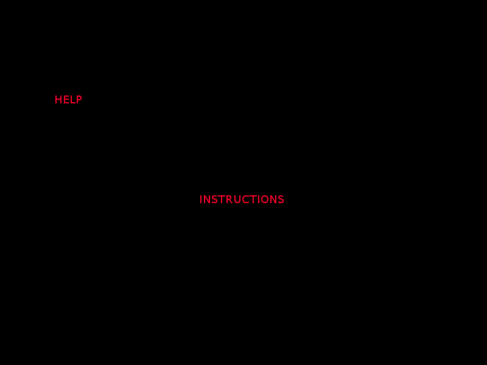
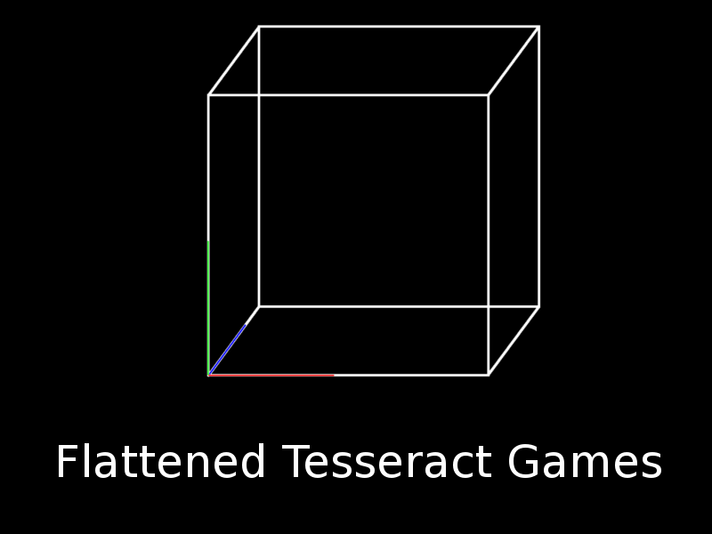

I'm sorry, but your current browser does not support the HTML5 <canvas> tag :(
Keyboard layout for movement:
WASD (QWERTY)
ZQSD (AZERTY)
Use arrow keys (any)
Made for the Ludum Dare 31 game jam by Flattened Tesseract Games

